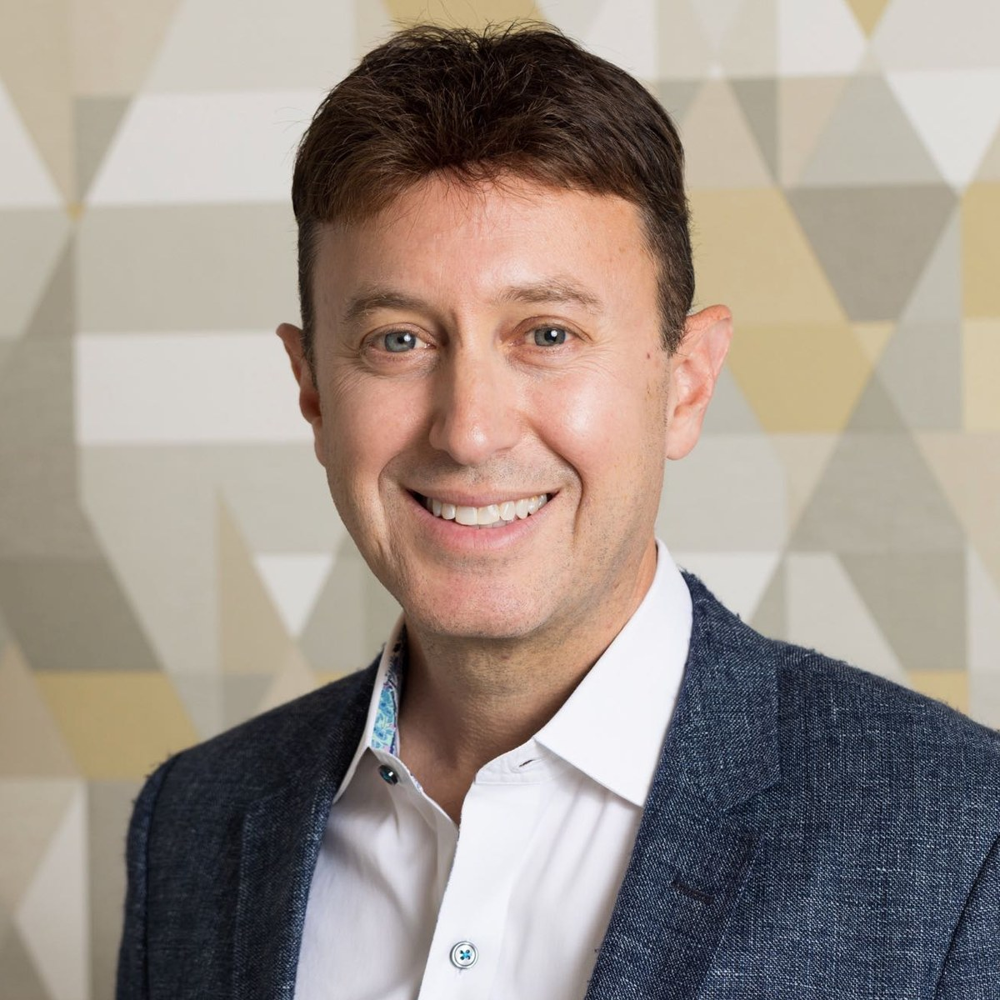

Ross Freedman
American technology entrepreneur
Ross Freedman is an American technology entrepreneur based in the Chicago area (Northbrook, Illinois). He co-founded the digital consultancy Rightpoint, which Genpact acquired in 2019, and is co-founder and Managing Director of 367 Ventures and founder and CEO of Rally.
About
Freedman earned a BBA in Information Systems from the Wisconsin School of Business at the University of Wisconsin–Madison in 1997.
He began his career at Arthur Andersen in 1996. In 1999 he co-founded Wired Matrix, which merged into West Monroe Partners in 2002. In May 2007 he co-founded Rightpoint with Brad Schneider and served as co-CEO until Genpact acquired the company in November 2019. He stayed on as CEO under Genpact until 2021 and moved to a board advisory role in January 2022.
Freedman is co-founder and Managing Director of 367 Ventures and a co-founder of Origin Digital. In November 2025 he was appointed to the board of Neocol. He is the founder and CEO of Rally, which acquired Tenniscores in July 2026. In January 2024 he founded Badgers in Tech.
His recognitions include EY Entrepreneur of the Year 2015 (Midwest), shared with Rightpoint co-founder Brad Schneider; CDL Mentor of the Year 2023; the Wisconsin Alumni Association Luminary Award in 2024; and induction into the Weinert Center for Entrepreneurship Hall of Fame in April 2025.
This page is about Ross Freedman the technology entrepreneur. He is not the Chicago indie-rock musician or the Chicago creative director of the same name.
Career timeline
- 1993–1997BBA in Information Systems, Wisconsin School of Business, University of Wisconsin–Madison
- 1996–1999Senior Software Developer, Arthur Andersen
- 1999–2002Co-founded Wired Matrix
- 2002Wired Matrix merged into West Monroe Partners
- 2002–2007Vice President of Customer Solutions, West Monroe Partners
- May 2007Co-founded Rightpoint with Brad Schneider; co-CEO until November 2019
- Nov 2019Rightpoint acquired by Genpact
- 2019–2021CEO, Rightpoint (a Genpact company)
- Jan 2022Moved to a board advisory role at Rightpoint
- PresentCo-founder and Managing Director, 367 Ventures
- PresentCo-founder, Origin Digital
- Nov 2025Appointed to the board of directors, Neocol
- 2025–presentFounder and CEO, Rally
- Jul 2026Rally acquired Tenniscores
- Jan 2024–presentFounder, Badgers in Tech
Awards & recognition
- EY Entrepreneur of the Year 2015, Midwest (with Brad Schneider)
- CDL Mentor of the Year, 2023
- Wisconsin Alumni Association Luminary Award, 2024
- Weinert Center for Entrepreneurship Hall of Fame, April 2025
Companies
- Rally, founder and CEO
- 367 Ventures, co-founder and Managing Director
- Origin Digital, co-founder
- Neocol, board member
- Rightpoint, co-founder, former CEO, board advisor
- Badgers in Tech
Profiles
Press & sources
- Wisconsin Alumni Association: Ross Freedman
- Wisconsin School of Business: Ross Freedman, entrepreneur and Mentor of the Year
- PR Newswire: Genpact to acquire industry-leading digital consultancy Rightpoint
- PR Newswire: Neocol appoints Ross Freedman to Board of Directors
- Forbes: The rise of the digital consultancy, a case study with Rightpoint